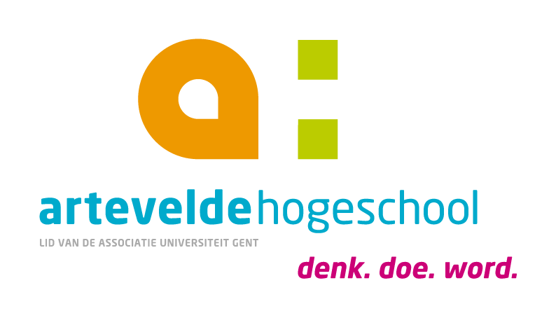

Met trots presenteren wij jullie het didactisch materiaal dat ontstond als resultaat van onze bachelorproef. Het doel van dit materiaal is om vrouwelijke klassieke componisten meer aan bod te laten komen in het secundair onderwijs.
Klik op de download knop om het didactisch materiaal te downloaden, of lees meer over ons project.
